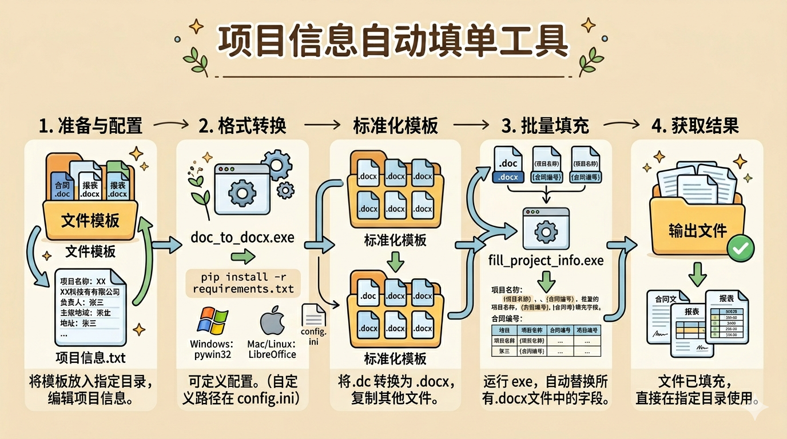

📖 产品介绍
项目信息自动填充工具是一款专为项目文档管理设计的自动化工具，能够快速将项目信息批量填充到Word/Excel文档模板中，大幅提高文档处理效率。
主要功能：
- 文档格式转换：将旧版.doc文件自动转换为.docx格式
- 信息自动填充：根据配置文件自动填充项目信息到Word/Excel模板文档，支持.docx/.xlsx/.xlsm格式
- 批量处理：支持批量处理多个文档和文件夹
- 保持格式：完美保留原文档的格式和样式
💻 系统要求
| 项目 | 要求 |
|---|---|
| 操作系统 | Windows 7/8/10/11 (64位) |
| Microsoft Office | Word 2010 或更高版本 |
| 磁盘空间 | 至少 100MB 可用空间 |
| 内存 | 建议 2GB 以上 |
📦 安装说明
步骤 1： 解压下载的压缩包到任意文件夹
步骤 2： 确保文件夹中包含以下文件：
- 文档格式转换工具.exe
- 项目信息自动填充工具.exe
- config.ini
- 项目信息.txt
- 使用说明书.html
- 使用说明书-极简版.html
- README.txt
- 文件模板（文件夹）
提示： 本工具为绿色软件，无需安装，直接运行即可使用！
🚀 使用步骤
第一步：准备模板文件
1.1 将您的Word/Excel文档模板放入"文件模板"文件夹中，支持格式：.doc/.docx/.xlsx/.xlsm
1.2 在模板文档中使用 {字段名} 格式标记需要填充的位置
示例： 在文档中输入 {项目名称}、{客户单位}、{项目编号}、{合同编号} 等标记
第二步：配置项目信息
2.1 打开"项目信息.txt"文件，按照格式填写实际项目信息
项目名称:示例项目
客户单位:示例客户
项目编号:XM20260001
合同编号:20260001
客户单位:示例客户
项目编号:XM20260001
合同编号:20260001
注意：
- 使用英文冒号 ":" 分隔字段名和值
- 字段名必须与模板中的 {字段名} 完全一致
- 每行一个字段，不要有多余的空格
第三步：转换文档格式
3.1 双击运行"文档格式转换工具.exe"
3.2 工具会自动将"文件模板"中的.doc文件转换为.docx格式
3.3 转换后的文件会保存在"标准化模板"文件夹中
说明： 如果您的模板已经是.docx格式，可以跳过此步骤
第四步：填充项目信息
4.1 双击运行"项目信息自动填充工具.exe"
4.2 工具会自动读取"项目信息.txt"中的配置
4.3 自动填充"标准化模板"中的所有文档
4.4 处理完成的文件会保存在"输出文件"文件夹中
完成！ 您可以在"输出文件"文件夹中查看处理后的文档
⚙️ 高级配置
如需自定义文件夹路径，可以编辑 config.ini 文件：
[paths]
source_dir = 文件模板
template_dir = 标准化模板
output_dir = 输出文件
project_info_file = 项目信息.txt
source_dir = 文件模板
template_dir = 标准化模板
output_dir = 输出文件
project_info_file = 项目信息.txt
❓ 常见问题
Q1: 运行程序时提示找不到文件？
A: 请确保所有文件都在同一文件夹中，并且文件名完全正确。
Q2: 填充后文档中的字段没有被替换？
A: 请检查：
- 模板中的字段名格式是否正确（使用花括号 {字段名}）
- 项目信息.txt中的字段名是否与模板完全一致
- 字段名中是否有多余的空格
Q3: 转换.doc文件时失败？
A: 请确保：
- 已安装Microsoft Word
- Word版本为2010或更高
- 源文件没有被其他程序占用
Q4: 能否处理Excel文件？
A: 从v1.1版本开始，已支持Excel文件处理，支持格式为.xlsx和.xlsm（带宏的Excel），字段标记格式和Word相同，均使用{字段名}。
📞 技术支持
如果您在使用过程中遇到任何问题，请联系 AI中心 获取技术支持。
📝 更新日志
版本 1.1 (2026-04-17)
- 新增Excel文件支持，支持.xlsx/.xlsm格式字段自动填充
- 简化配置流程，直接编辑项目信息.txt即可，无需重命名操作
- 修复文件名错误问题
- 优化文档说明，新增极简版使用说明书
版本 1.0 (2026-04-10)
- 首次发布
- 支持.doc到.docx格式转换
- 支持项目信息自动填充
- 支持批量文档处理